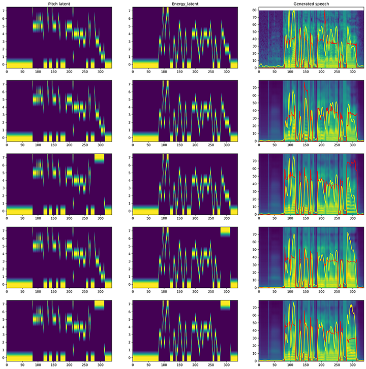

Speech Editing
Timbre Editing
Timbre
Change speaker timbre while keeping content and prosody
Pitch Editing
Pitch
Increase pitch of the last word ("farmer")
Energy Editing
Energy
Enhance volume energy of the last word ("farmer")
Pitch + Energy
Pitch
Energy
Modify both pitch and energy simultaneously
All Editing
Timbre
Pitch
Energy
Modify timbre, pitch, and energy simultaneously
Editing Comparison
Visualization
Pitch, Energy, and Mel-spectrogram comparison across different editing methods
